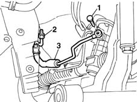
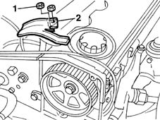
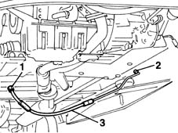

4130B40 outlet pipe from pump to power steering case r r
- Path
- Procedures > 41 STEERING > 4130 POWER ASSISTED STEERING > 4130B power steering hydraulic sytem > 4130B40 outlet pipe from pump to power steering case r r
- Kind
- repair procedure (removal / refitting; the operation number is the code)
- Applies to
- all engines; all production periods
- Interactive page
- https://sloeber94.github.io/elrnDB-fMltpl/en/#/2891697
Applies to: engines: 1.6 16v; all production periods
 Removing
Removing
 Refitting
RefittingDrain the fluid from the power assisted steering fluid reservoir using a syringe.
Place the car on a ramp.
Raise the car.
1. Undo the connector for the pipe from the power assisted steering box.
Lower the vehicle.
2. Undo the connector from the power steering pump.
3. Remove the supply pipe.

Applies to: engines: 1.6 16v; all production periods
Refitting
RemovingTighten the connector to the power assisted steering pump.
Tighten the connector for the pipe to the power assisted steering box.
4130B14 Power assisted steering fluid reservoir CAP - R.R. - Check level and top up if necessary.
Applies to: engines: 1.9 JTD 8V; all production periods
Removing
RefittingPlace the car on a ramp.
Drain the fluid from the power assisted steering reservoir.
1016A10 sound-proofing cover - r + r
1. Unscrew the nuts.
2. Remove the power steering pipe mounting bracket.

Applies to: engines: 1.9 JTD 8V; all production periods
1. Undo the connector for the power steering pump supply pipe to the steering box.
2. Undo the connector on the power steering box.
3. Remove the supply pipe from the power steering pump to the steering box, releasing it from the plastic fixing bands.

Applies to: engines: 1.9 JTD 8V; all production periods
Refitting
RemovingPosition the supply pipe and tighten the connector on the steering box.
Secure the pipe using the fixing bands.
Tighten the connector to the power assisted steering pump.
 | Fastening | Component | Ø | Value (daNm) |
|---|---|---|---|---|
- | Ring nut | PIPE BTWN PUMP + POWER STEERING BOX | M16 | 3.5 |
| Fastening | Component | Ø | Value (daNm) |
|---|---|---|---|---|
- | Ring nut | PIPE BTWN PUMP + POWER STEERING BOX | M16 | 4 |
Fit the bracket on the power assisted steering pump and tighten the fixing nuts.
1016A10 sound-proofing cover - r + r
Refill the power assisted steering system using appropriate fluid.
The power steering system is self-bleeding; to bleed, turn the steering wheel full lock left and right with the engine running and the car stationary.
After bleeding the air, check the level of the power steering fluid again and top up, if necessary.